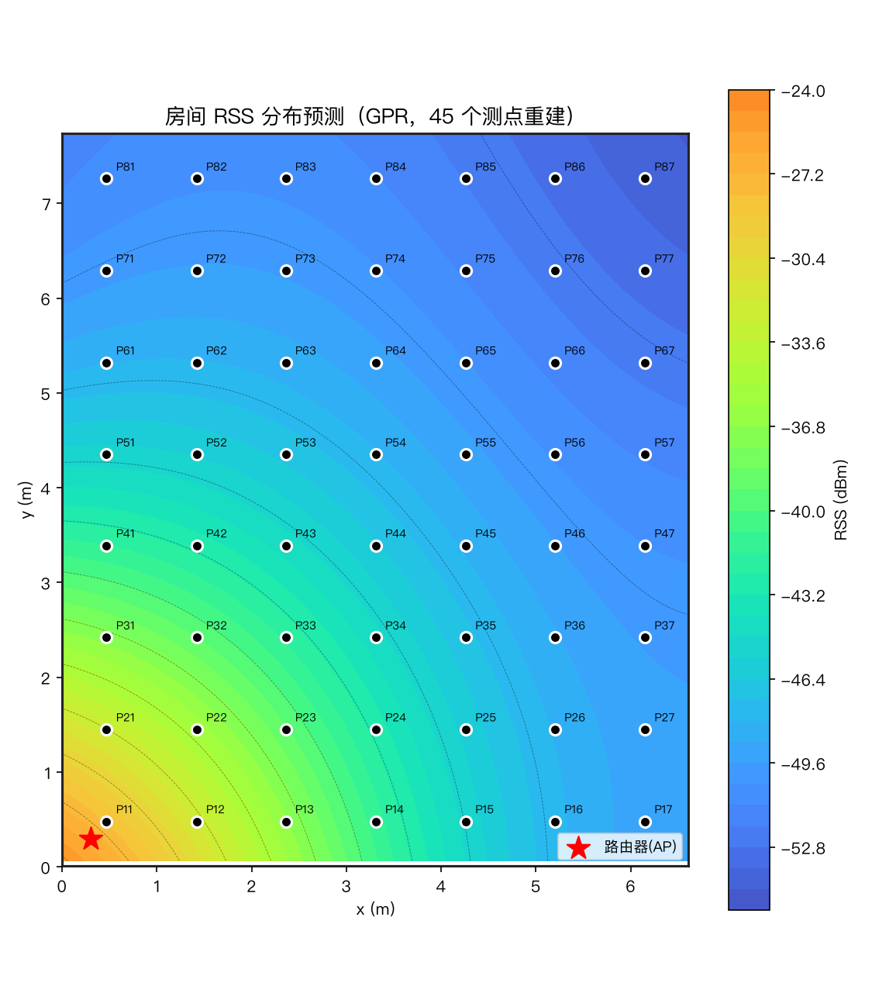
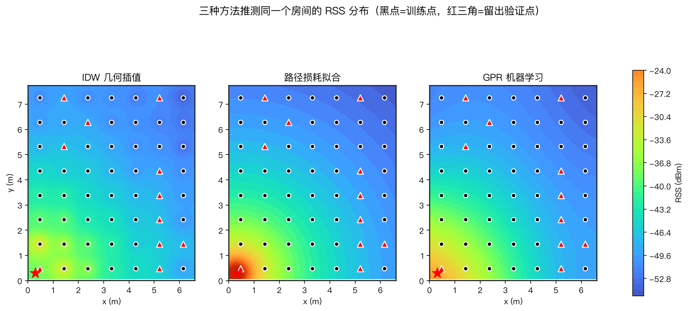
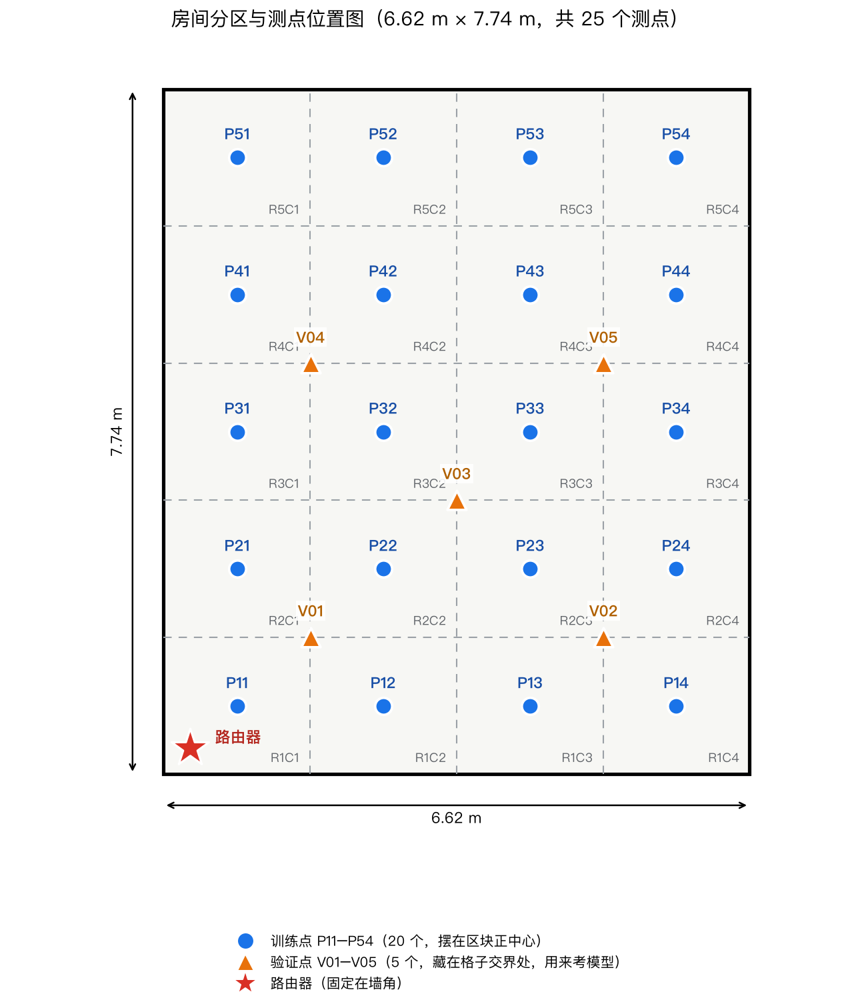
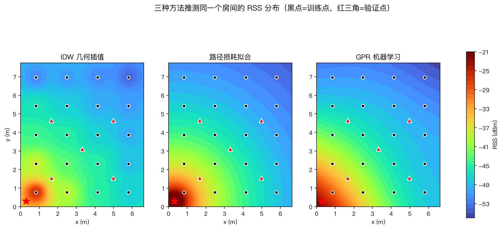

在房间里按点位走一遍，网页自动完成数据采集、模型训练，并生成信号强度热力图。零命令行、全流程引导，支持无硬件的演示模式。
网站把整条数据管线包装成引导式流程，每一步就是一个按钮。
输入房间尺寸与路由器位置，自动布设测点（间距 1m，最多 100 点），支持 L 型等自定义房型。
逐批采集，每点落盘 + 原子写入；崩溃可续采，随时打包下载（含进度清单）。
一键汇总 npz → 特征数据集；采满 4 点即可先试跑看效果。
IDW / 路径损耗 / GPR 三模型对比，输出预测热力图、实测对比与评估报告。
演示房间 6.6m × 7.7m，56 个测点（训练 45 / 留出验证 11）。




11 个未参与建模的点位上的预测表现（单位 dBm，越低越好）。
| 模型 | MAE | RMSE | R² |
|---|---|---|---|
| IDW | 2.899 | 6.392 | 0.536 |
| 路径损耗 | 0.470 | 0.637 | 0.995 |
| GPR | 1.620 | 3.442 | 0.865 |
评委没有硬件也能看完整流程；接上板子，同一套界面就是真实采集工具。
Python 3.10+，演示模式开箱即用。
# 克隆（含 ESPectre 子模块） git clone --recursive https://github.com/carrotsoup123456/wifi-heatmap.git cd wifi-heatmap # 环境 & 启动 python3 -m venv .venv && source .venv/bin/activate pip install -r requirements.txt python web/app.py # 打开 http://127.0.0.1:8000